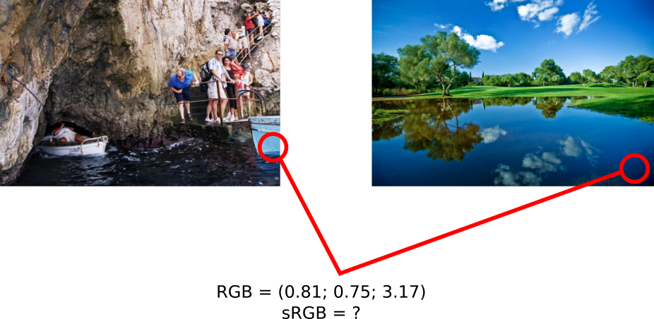
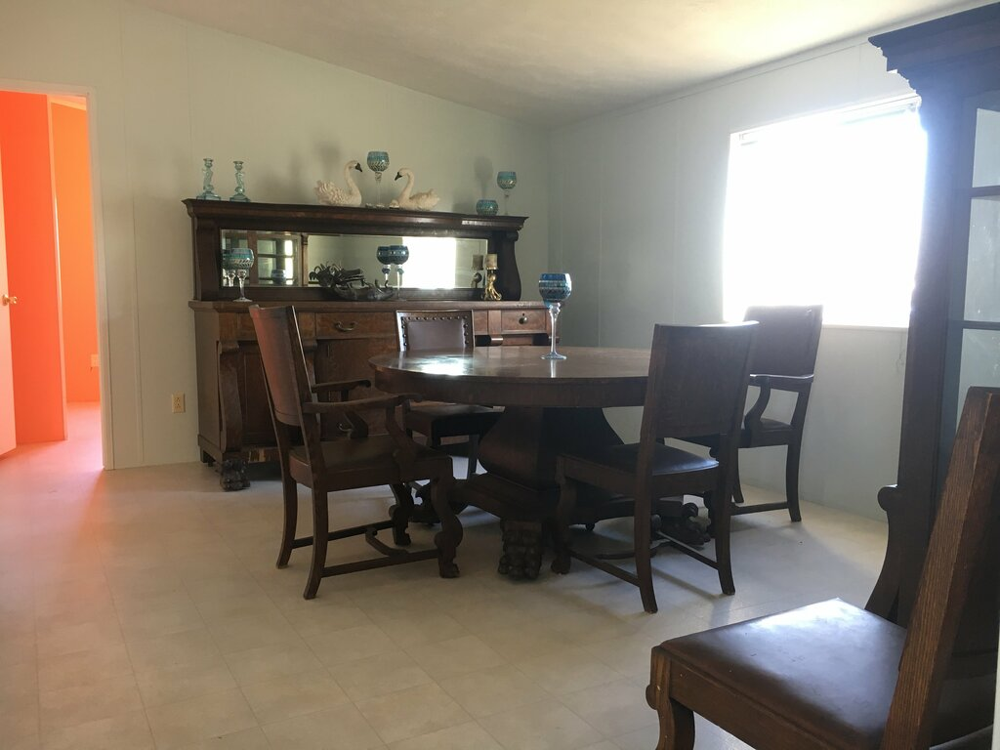
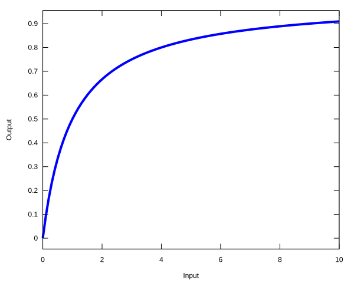
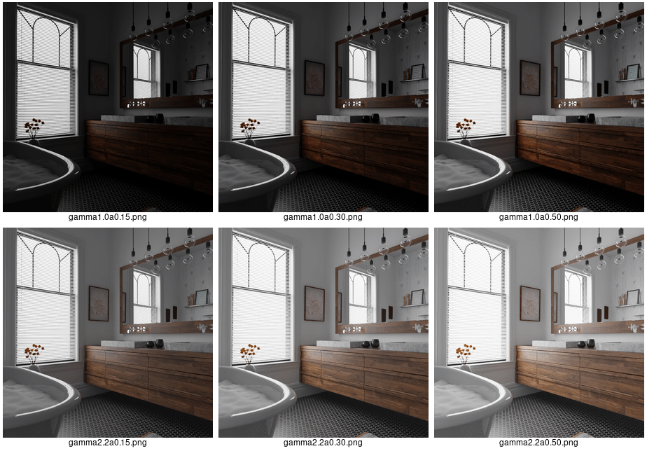
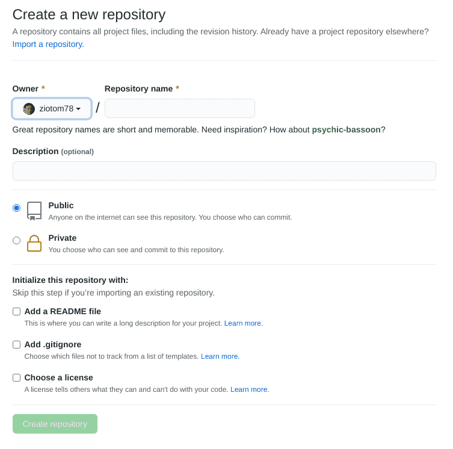
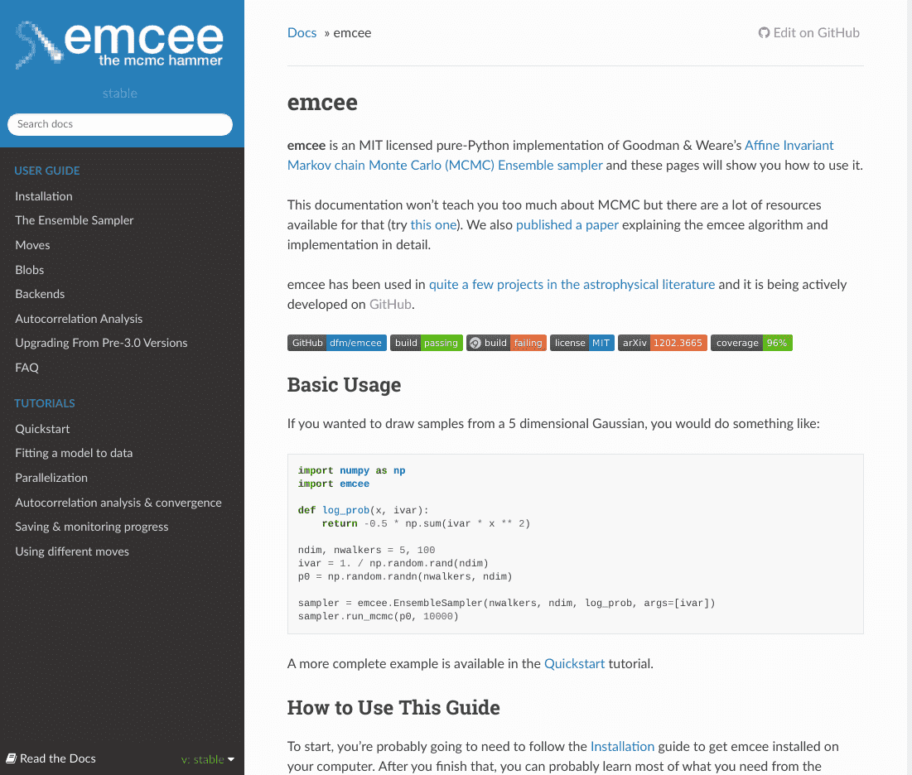
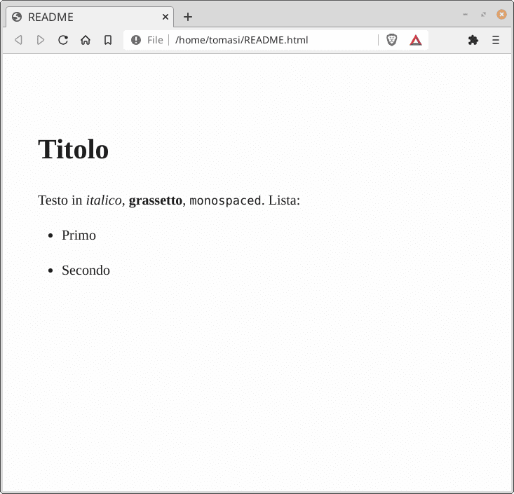
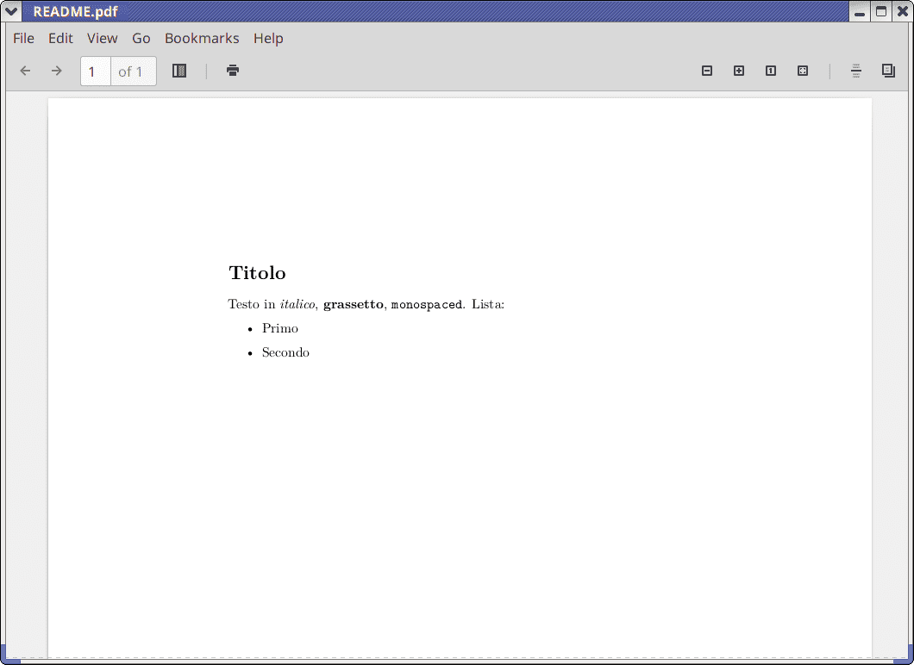
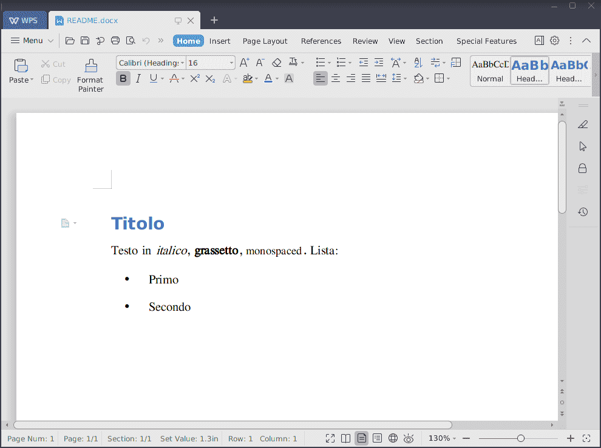
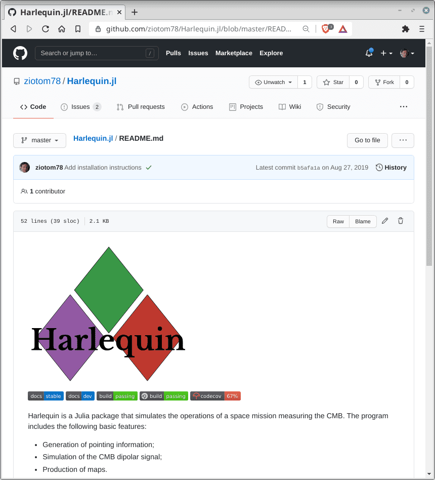

Calcolo numerico per la generazione di immagini fotorealistiche
Maurizio Tomasi maurizio.tomasi@unimi.it

To establish a plausible “average value” for the radiance coming from a scene, we must rely on psychophysics, the branch of psychology that deals with the relationship between a physical stimulus and the correlated psychological event
Weber and Fechner established that the eye’s response to a stimulus S is logarithmic (Weber-Fechner law): p = k \log_{10} \frac{S}{S_0} where p is the perceived value, and S is the intensity of the stimulus.
The logarithmic average is an average of the exponents, while the arithmetic average is an average of the values; if the values are 10^2, 10^4 and 10^6, the logarithmic average is 10^{\frac{\log_{10} 10^2 + \log_{10} 10^4 + \log_{10} 10^6}3} = 10^4,
As a comparison, the arithmetic average is (10^2 + 10^4 + 10^6)/3 \approx 10^6/3.
We have three scalar values (RGB) for each pixel. Which one should we use for l_i?
We will use the last: it isn’t physically meaningful but produces good results.
Once the average value is estimated, the R, G, B values of the image are updated through the transformation
R_i \rightarrow a \times \frac{R_i}{\left<l\right>},
where a is a user-settable value.
Curiously, in their book Shirley & Morley suggest a = 0.18; however, there is no “right” value, as a must be chosen depending on the image.

These are notoriously difficult to handle!
Shirley & Morley suggest to apply the following transformation to the R, G, B components of each pixel: R_i \rightarrow \frac{R_i}{1 + R_i}. The equation has these properties: \begin{aligned} R_i \ll 1 &\Rightarrow R_i \rightarrow R_i,\\ R_i \gg 1 &\Rightarrow R_i \rightarrow 1. \end{aligned}

We might want to apply a gamma correction to the image values.
If for a signal x the monitor emits a flux
\Phi \propto x^\gamma,
then the RGB values to be saved in the LDR image must be
r = \left[2^8\times R^{1/\gamma}\right],\quad g = \left[2^8\times G^{1/\gamma}\right],\quad b = \left[2^8\times B^{1/\gamma}\right],

Comments, however, should not be pedantic: it is not necessary to comment on obvious things, perhaps avoiding commenting on important things.
If you feel the need to put a lot of comments in a function to make it clear, perhaps the function is not written well.
Modern editors are able to read comments placed at the beginning of classes/methods/functions/types, and display them in certain contexts (for example, when you hover the mouse over a function call).
Get used to relying on this feature: it will teach you how to write comments better and prevent you from going back and forth in the code.
Usually, to declare a docstring, you must start a comment with a special character or string, for example:
README in your
repositories.
Try to be clear but also concise!
Negative example (boost.array).
The introduction begins like this:
The C++ Standard Template Library STL as part of the C++ Standard Library provides a framework for processing algorithms on different kind of containers. However, ordinary arrays don’t provide the interface of STL containers (although, they provide the iterator interface of STL containers).
A whole paragraph, and it still doesn’t say what the library does! (It’s not even mentioned in the next paragraph…)

.md extension, e.g., README.md);.rst extension), widely used in the Python world;.adoc or .txt extension);.org extension: my favourite, but it only works with
Emacs);Usually, the documents accompanying a program are written in Markdown (it’s the default choice on GitHub).
The standard tool for Markdown is pandoc, which can convert
.md files into:
.epub format;Pandoc implements an extended version of Markdown, and supports equations like \int x^2\,\mathrm{d}x and Unicode characters (UTF-8).
Pandoc (on Debian/Ubuntu/Mint systems):
sudo apt install pandocTeX/LaTeX (same):
sudo apt install texlive-fullIf you have installed Pandoc, create a file
README.md with this content:
Convert it to an HTML/Word/LaTeX file with
$ pandoc -t html5 --standalone -o README.html README.md
$ pandoc -t docx --standalone -o README.docx README.md
$ pandoc -t latex --standalone -o README.tex --pdf-engine=lualatex README.md


In GitHub, you don’t need to convert Markdown files like
README.md with pandoc because it implements an
internal HTML converter.
If you upload a file named README.md to a
repository, GitHub will automatically display it on the main page:

GitHub interprets Markdown slightly differently from Pandoc: consult the GitHub Flavored Markdown Spec guide.
In particular, you cannot use line breaks within a paragraph: in the following text, the poem is rendered by GitHub with each verse on its own line:
Voi, che sapete che cosa è amor,
Donne vedete, s'io l'ho nel cor.
Quello ch'io provo vi ridirò;
è per me nuovo, capir nol so.(pandoc would instead transform it into a single
paragraph).
When you registered on GitHub, you had to agree to its Terms of service.
How many of you have read them? 👀
Do you know what the average user could do with the code you published on GitHub for this course?
Even if you have published code on GitHub, you remain the owner of the code.
But you obviously give GitHub the right to keep a copy of the code on their server (in legal terms it’s called “content,” because it also includes other types of files, such as images and Markdown text).
You also give GitHub permission to display your content, and to allow users to download it.
What you do not necessarily guarantee to users is the ability to compile, modify, or run your code, let alone use the results produced by it in a publication!
LICENSE, LICENSE.txt, or
LICENSE.md file (in Markdown).A lot of code is written in the research world.
The main purpose is to perform simulations and analyses, which are then described in an article.
It is important that the results are reproducible: a reader should be able to run the same program used by the authors and obtain the same results.
The program should therefore be distributed along with its source code: in this way, readers can verify its correctness.
A license establishes the rights of the program’s creator and the rights of the user, and is therefore very important for physicists too!
Suppose you are doing a job that requires a certain type of program/library.
You have found a program/library on the internet that seems to be just what you need.
Before using it, however, you must answer the following questions:
From the way I asked you to create your repositories, I reckon
that none of you have added a LICENSE or
LICENSE.md file.
This is a text file that specifies the user’s rights: if this file does not exist in the repository, the user is not authorized to compile your code, nor to run it, etc. You must give your explicit consent!
If you are not an expert in legal matters, it is best that you do not write this file yourself. (Otherwise, you could write abominations!)
There are many types of ready-to-use licenses, and
LICENSE files are usually produced by copy-and-paste. So
let’s see which licenses can be used in your work.
A list of what the user can do; what is not listed is implicitly excluded.
They do not always allow the user to obtain a copy of the source code; when this is provided, it is usually only for reading and verification.
It is a type of license used in academia (e.g., in faculties closely linked to industry, such as engineering), although not very common in physics. # Permissive Licenses
This is a family of licenses that provides maximum freedom to the user.
The most famous types are:
The user can acquire the source code, compile it, run it, etc.
In general, these licenses state what is prohibited, and anything not listed is implicitly permitted.
The user is not prohibited from modifying the code and redistributing it…
…and the user is not prohibited from incorporating the code into their program, which is then released under a proprietary license.
The only explicit requirement is that the code attribution be maintained: I cannot take someone else’s code and publish it claiming it as my own.
This is a type of Permissive License that, however, places important restrictions on how the code is redistributed.
If code under a copyleft license is used within another codebase, the latter must also be released under a copyleft license (but it is not mandatory to release it!).
The most famous example is the GNU Public License, used for Linux, Emacs, Bash, and your beloved GCC. It is called a viral license: if a program “touches” copyleft code, it automatically becomes copyleft itself, even if it merely links to it. (Many detest it for this!)
It is an open-source software license designed by the European Union, and legalized translations are available in the 23 languages of the EU!
Proposed in 2007, it has now reached version 1.2.
Compatible with GPL, LGPL, and AGPL (as well as others), but it is not viral… and this is a good thing!
Let’s see the differences between EUPL and GPL, which is the most famous copyleft license of all.
It is compatible with European legislation, unlike the GPL, which has some parts that may not be applicable in the EU.
Despite being copyleft, it is not viral: you can write a program that interfaces with an EUPL program and choose the license you want because an explicit exception is provided in the text.
It explicitly covers the case of so-called SaaS (“Software as a Service”), which are programs that are not run on your own computer but work within a browser. (One of the reasons why AGPL was written was precisely to fill this gap in the GPL).
It is the “recommended” license in a large number of countries (including Italy) for software used in public administration (mandatory in Spain!).
The European Union offers a free official course on the EUPL! (Those who complete the quiz with at least 60% correct answers get a certificate.)
Discussion on the EUPL on the writefreesoftware.org website.
Simple explanation of why the virality of the GPL is not compatible with European legislation: Why viral licensing is a ghost.
Interesting more general discussion on the Julia forum.
For the code developed in this course, in principle, you could use a permissive or copyleft license at your discretion.
But if in the next lessons you use external libraries (the time will come), you will have to be careful that the library’s license is compatible:
You can use the sites TLDRLegal and Choose an open source license to decide. If you really don’t know what to use, the safest choice is probably the EUPL.
The Open Source Initiative website provides a template for various licenses, and the EU provides an interactive way to pick one of them!
To apply a license to your code, you must take the following steps:
LICENSE (if it is in
ASCII format) or LICENSE.md (if it is in Markdown) inside
your repository.LICENSE.md FileIt is common practice to also include a copy of the license in a comment at the beginning of each source file: this way, anyone who copies a file from a repository into their own code “brings” the license with them.
However, it is not necessary (I never do it…); alternatively, you can insert a short message: This file is released under a … license. See LICENSE.md.
There are more structured methods for reporting the license type in the code. One example is SPDX, a standard also followed by the Linux kernel, which allows license information to be processed automatically (e.g., by a script).
Comments in code
Everyone knows how important it is to write comments in the code!
A comment helps those reading the code understand what that code does.
It can help you too! If you read the code you wrote today in a year, are you sure you will remember why you wrote it that way?